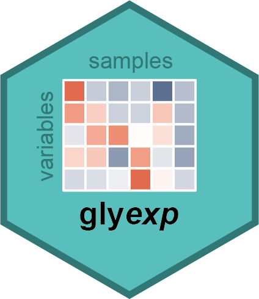

Standardize variable IDs in an experiment
Source:R/standardize-variable.R
standardize_variable.RdConverts meaningless variable IDs (like "GP1", "V1") into meaningful, human-readable IDs based on the experiment type and available columns.
The format of the new IDs depends on the exp_type if format is not specified:
glycomics:{glycan_composition}, e.g., "Hex(5)HexNAc(2)"glycoproteomics:{protein}-{protein_site}-{glycan_composition}traitomics:{motif}or{trait}depending on which column is presenttraitproteomics:{protein}-{protein_site}-{motif}or{protein}-{protein_site}-{trait}
If duplicate IDs are generated (e.g., same composition with multiple PSMs),
a unique integer suffix is appended using the unique_suffix pattern.
Arguments
- exp
An
experiment().- format
A format string specifying how to construct variable IDs. Use
{column_name}to insert values fromvar_infocolumns. For example,"{gene}-{glycan_composition}"would produce "GENE1-Hex(5)". IfNULL(default), a sensible format is chosen based onexp_type.- unique_suffix
A string pattern for making IDs unique when duplicates exist. Must contain
{N}which will be replaced with the numeric suffix (1, 2, 3...). Default is"-{N}"which produces IDs like "Hex(5)-1", "Hex(5)-2".
Examples
# Glycomics example
expr_mat <- matrix(1:4, nrow = 2)
rownames(expr_mat) <- c("V1", "V2")
colnames(expr_mat) <- c("S1", "S2")
sample_info <- tibble::tibble(sample = c("S1", "S2"))
var_info <- tibble::tibble(
variable = c("V1", "V2"),
glycan_composition = glyrepr::glycan_composition(c(Hex = 5, HexNAc = 2))
)
exp <- experiment(expr_mat, sample_info, var_info,
exp_type = "glycomics", glycan_type = "N"
)
standardize_variable(exp)
#>
#> ── Glycomics Experiment ────────────────────────────────────────────────────────
#> ℹ Expression matrix: 2 samples, 2 variables
#> ℹ Sample information fields: none
#> ℹ Variable information fields: glycan_composition <comp>
# Glycoproteomics example
expr_mat <- matrix(1:4, nrow = 2)
rownames(expr_mat) <- c("GP1", "GP2")
colnames(expr_mat) <- c("S1", "S2")
sample_info <- tibble::tibble(sample = c("S1", "S2"))
var_info <- tibble::tibble(
variable = c("GP1", "GP2"),
protein = c("P12345", "P12345"),
protein_site = c(32L, 45L),
glycan_composition = glyrepr::glycan_composition(c(Hex = 5, HexNAc = 2))
)
exp <- experiment(expr_mat, sample_info, var_info,
exp_type = "glycoproteomics", glycan_type = "N"
)
standardize_variable(exp)
#>
#> ── Glycoproteomics Experiment ──────────────────────────────────────────────────
#> ℹ Expression matrix: 2 samples, 2 variables
#> ℹ Sample information fields: none
#> ℹ Variable information fields: protein <chr>, protein_site <int>, glycan_composition <comp>
# Custom format example
standardize_variable(exp, format = "{protein}-{glycan_composition}")
#>
#> ── Glycoproteomics Experiment ──────────────────────────────────────────────────
#> ℹ Expression matrix: 2 samples, 2 variables
#> ℹ Sample information fields: none
#> ℹ Variable information fields: protein <chr>, protein_site <int>, glycan_composition <comp>